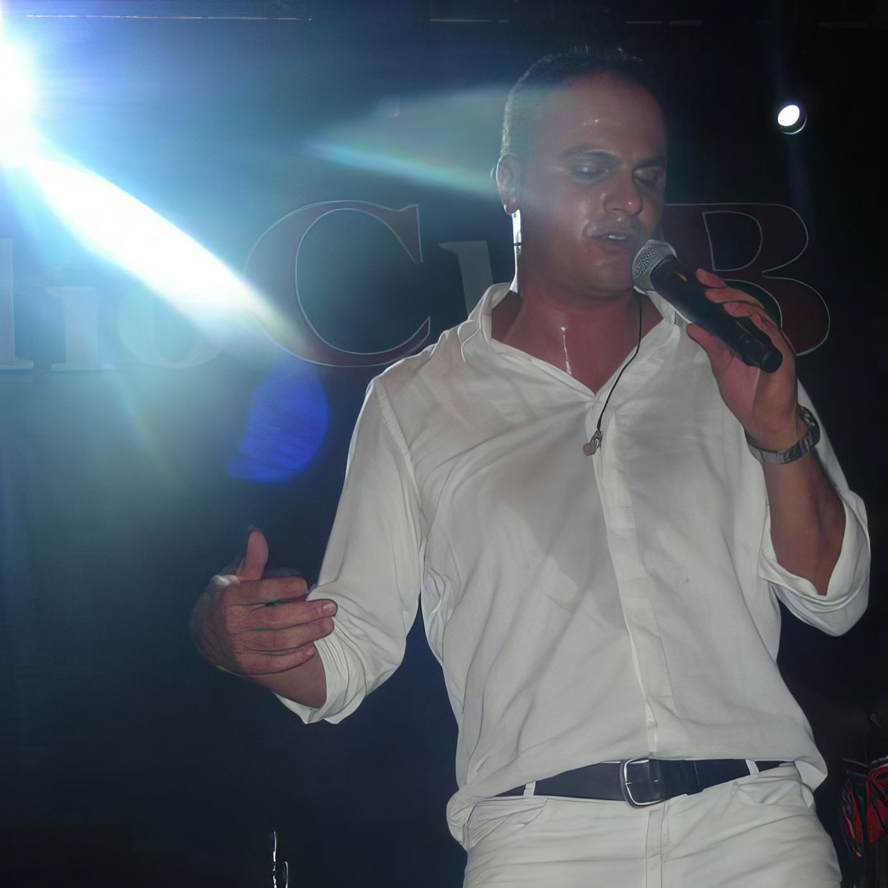
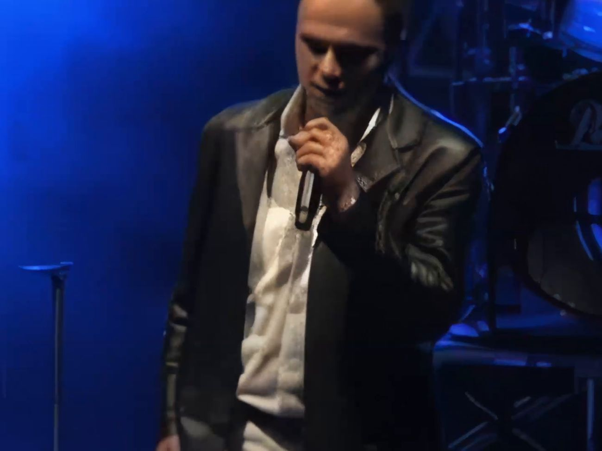

Cover band di Baglioni a Catania
Suoniamo dal vivo le canzoni di Claudio Baglioni nelle piazze e sui palchi della Sicilia, con gli arrangiamenti dei suoi concerti. Sul palco dal 2007.

Brani dal vivo, Misterbianco 2010
Tre brani registrati al concerto, così come li suoniamo sul palco.
- 5:45
- 5:20
- 5:41

audioClaB su TikTok
I video più visti del profilo @audioclab, da Io dal mare in giù.
Altri concerti su YouTube
Due esibizioni dal canale della band. Il video parte quando lo apri.
La band, dal 2007
Siamo nati a Catania all'inizio del 2007. Il repertorio viene dai grandi concerti di Claudio Baglioni e lo suoniamo con gli arrangiamenti originali, senza riletture personali.


La formazione
- Gianfranco Alberti, in arte Giancovoce
- Giuseppe Farotastiere
- Debora Lombardopianoforte e tastiere
- Giuseppe Bertolochitarre
- Franco Prestichitarre
- Luigi Scuderibasso elettrico
- Andrea Brunobatteria
Ne hanno parlato
-
MAD Concerti 2025: la Sicilia torna a vibrare con la grande musica dal vivo
22 luglio 2025
Sikelian presenta la stagione e gli audioClaB come una delle tribute band più fedeli al repertorio di Baglioni.
-
L'estate siciliana di MAD Concerti si accende con audioClaB
30 giugno 2025
Sikelian racconta lo spettacolo Claudio Baglioni Live Experience e la formazione al completo.
-
Radio Studio 90 Italia
radio
Gli audioClaB ospiti del programma Stelle di giorno, dedicato alle tribute band.
Concerti degli audioClaB
Nessuna data in programma al momento. Le nuove date escono qui e sulla pagina Facebook.
Segui le date su Facebook
Dove abbiamo suonato
- Augusta, Piazza Duomo20 set 2026
- Piedimonte Etneo, con MAD Accademia12 set 2026
- Trecastagni, Spazio Artistico Polifunzionale7 feb 2026
- Fiumefreddo di Sicilia, sagrato della Chiesa Castello7 set 2025
- Mascalucia, Parco Trinità Manenti21 ago 2025
- Trecastagni, Piazza Marconi13 ago 2025
- Riposto, Piazza San Pietro27 lug 2025
- Linguaglossa, Piazza Cappuccini26 lug 2025
- Roccalumera, Piazza Santa Maria del Carmelo25 lug 2025
- Gravina di Catania e Misterbianco2010